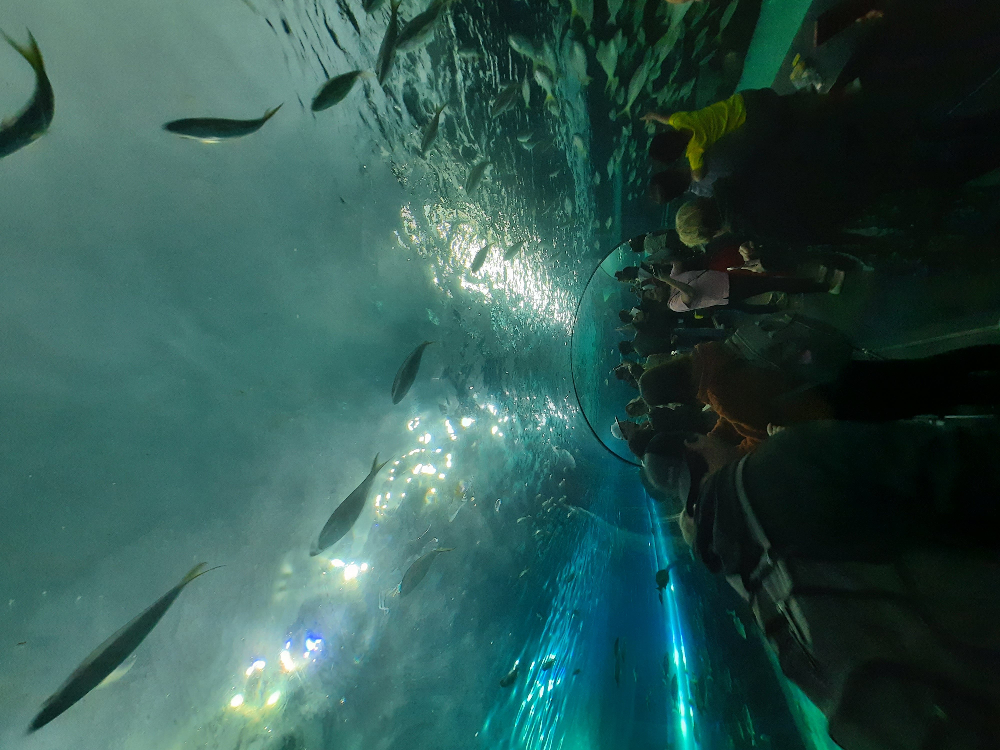
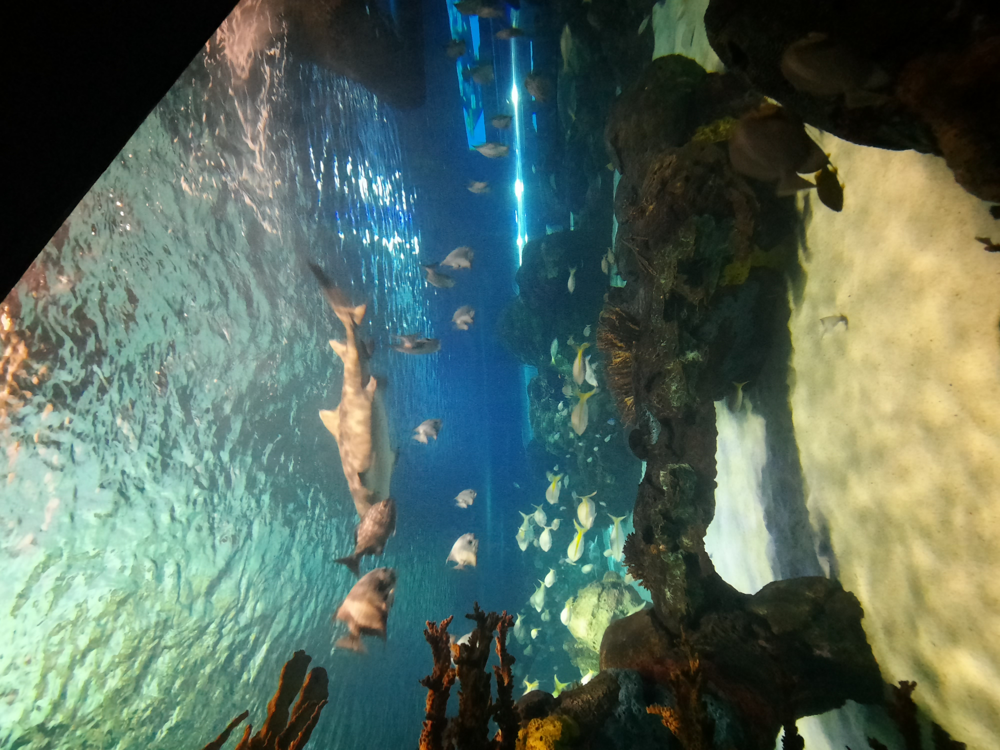

Explore the Mesmerizing Underwater World at Ripley's Aquarium of Canada
Ripley's Aquarium, located in the heart of Toronto, offers a captivating journey into the depths of the ocean. Immerse yourself in the beauty and wonder of marine life through interactive exhibits and breathtaking displays.



My visit to Ripley's Aquarium was a mesmerizing experience. From the vibrant colors of tropical fish to the graceful movements of majestic sharks, the aquarium offers a diverse range of marine environments.
Key Exhibits:
- The Dangerous Lagoon: Walk through a tunnel surrounded by sharks and other marine species.
- Rainbow Reef: Explore a colorful coral reef teeming with tropical fish.
- Touch Tanks: Interact with rays, horseshoe crabs, and other touch-friendly creatures.
Interactive Experiences:
- Attend live feedings and educational sessions led by marine experts.
- Experience the thrill of the underwater world through virtual reality exhibits.
- Participate in behind-the-scenes tours to learn more about marine conservation efforts.
Here's a glimpse of the underwater adventure at Ripley's Aquarium. Watch the video to get a preview:
Plan your visit to Ripley's Aquarium for an immersive and educational experience for visitors of all ages. Explore the wonders of the ocean without getting wet!